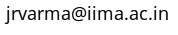

Prof. Jayanth R. Varma
Indian Institute of Management
Vastrapur, Ahmedabad 380 015 INDIA

Telephone numbers
+91-79-7152 4867 (Office)
+91-79-7152 5318 (Res)
Social Media
twitter
Facebook (financial markets
blog)
Facebook (computing
blog)
Wordpress (financial markets
blog)
Wordpress (computing blog)
GitHub
I am a professor of finance working mainly in the field of financial markets and their regulation. On this website, you can find many of my articles and papers as well as the reports of various government committees that I have been involved in. You can also read my blog (currently suspended) about financial markets and their regulation. My open source software (mainly related to financial markets) is now hosted at GitHub.
Test.